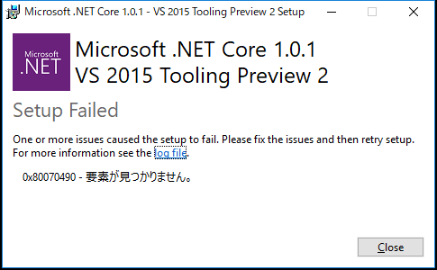

Problem
OpenCVSharpをビルドしようと思ったら、プロジェクトファイルが開けなくなっており、Visual Studio 2015に表示されていたエラーについてのメモ。
Resolution
.Net Core 1.0.1 tools Preview 2 をインストール
海外の方が同じ問題に遭遇しておりました。日本語では遭遇例がありませんでした。悲しい。いと悲しい。

.Net Core 1.0.1 tools Preview 2をインストールすれば良いです。
0x80070490 - 要素が見つかりません。
が、インストール中にエラーが発生。

こちらも同じ現象に、遭遇している方が海外に。日本人?いませんねぇ。

{kind=link}
どうも、Visual Studio 2017がインストールされている環境に、.Net Core 1.0.1 tools Preview 2をインストールすると遭遇する模様。
正確には、Microsoft Visual C++ 2017 Redistributableが邪魔をしているらしい。
対処法は
- Microsoft Visual C++ 2017 Redistributableをアンインストール
- Microsoft Visual C++ 2015 Redistributableをインストール
- .Net Core 1.0.1 tools Preview 2を再インストール
- Microsoft Visual C++ 2017 Redistributableを再インストール
という風にすれば良いです。
ちなみに、Microsoft Visual C++ 2017 Redistributableをインストールすると、Microsoft Visual C++ 2015 Redistributableは消えてしまいます。
再頒布可能パッケージは下記から入手可能。
Microsoft Visual C++ 2015 Redistributable
Microsoft Visual C++ 2015 再頒布可能パッケージ Update 3
Microsoft Visual C++ 2017 Redistributable
ちょっとこっちはわかりにくいです。
Visual Studio のダウンロードのOther Tools and Frameworksにリンクが記載されています。
{kind=link}